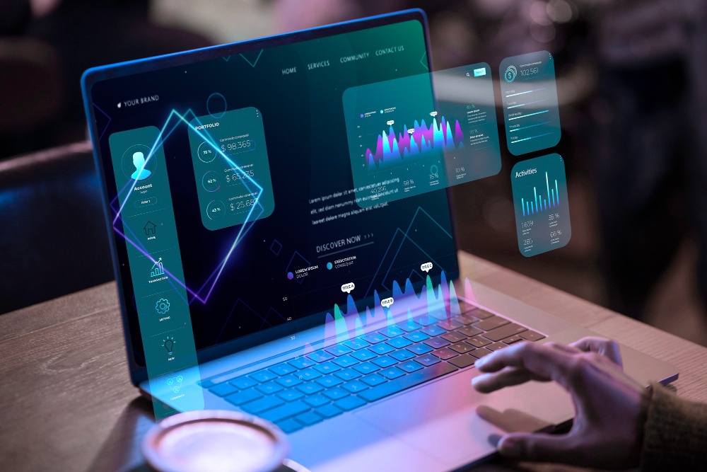

A História da Tecnologia
Quando falamos em tecnologia, a primeira coisa que vem à mente são os computadores, os celulares e a internet. Mas, na verdade, a tecnologia acompanha o ser humano desde os tempos mais antigos. Desde o momento em que nossos ancestrais aprenderam a usar pedras como ferramentas, já existia uma forma de inovação. Com o passar dos séculos, invenções como a roda, a bússola, a imprensa e a eletricidade mudaram radicalmente a forma como vivemos e nos relacionamos com o mundo.
Esses avanços criaram as bases para chegarmos ao que conhecemos hoje como era digital, marcada pela velocidade da informação e pela interconexão global Da Revolução Industrial à Era Digital A chamada Revolução Industrial, no século XVIII, foi um marco para a tecnologia moderna. O surgimento das máquinas a vapor, das linhas de produção e das fábricas deu origem a um ritmo acelerado de inovações. Séculos depois, outra revolução surgiu: a da computação. A criação dos primeiros computadores, na metade do século XX, mudou para sempre a forma como processamos informações.